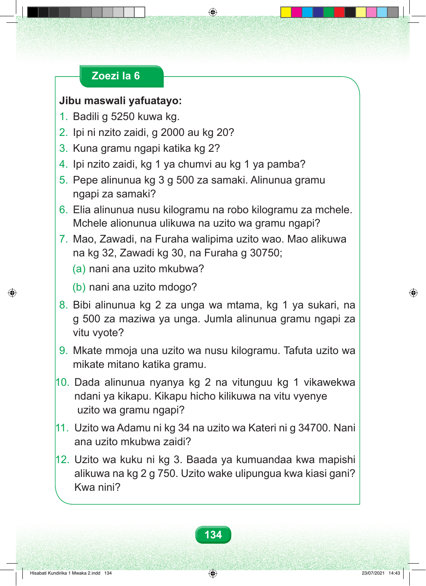

Zoezi la 6 Jibu maswali yafuatayo: 1. Badili g 5250 kuwa kg. 2. Ipi ni nzito zaidi, g 2000 au kg 20? 3. Kuna gramu ngapi katika kg 2? 4. Ipi nzito zaidi, kg 1 ya chumvi au kg 1 ya pamba? 5. Pepe alinunua kg 3 g 500 za samaki. Alinunua gramu ngapi za samaki? 6. Elia alinunua nusu kilogramu na robo kilogramu za mchele. Mchele alionunua ulikuwa na uzito wa gramu ngapi? 7. Mao, Zawadi, na Furaha walipima uzito wao. Mao alikuwa na kg 32, Zawadi kg 30, na Furaha g 30750; (a) nani ana uzito mkubwa? (b) nani ana uzito mdogo? 8. Bibi alinunua kg 2 za unga wa mtama, kg 1 ya sukari, na g 500 za maziwa ya unga. Jumla alinunua gramu ngapi za vitu vyote? 9. Mkate mmoja una uzito wa nusu kilogramu. Tafuta uzito wa mikate mitano katika gramu. 10. Dada alinunua nyanya kg 2 na vitunguu kg 1 vikawekwa ndani ya kikapu. Kikapu hicho kilikuwa na vitu vyenye uzito wa gramu ngapi? 11. Uzito wa Adamu ni kg 34 na uzito wa Kateri ni g 34700. Nani ana uzito mkubwa zaidi? 12. Uzito wa kuku ni kg 3. Baada ya kumuandaa kwa mapishi alikuwa na kg 2 g 750. Uzito wake ulipungua kwa kiasi gani? Kwa nini? 134 Hisabati Kundirika 1 Mwaka 2.indd 134 23/07/2021 14:43